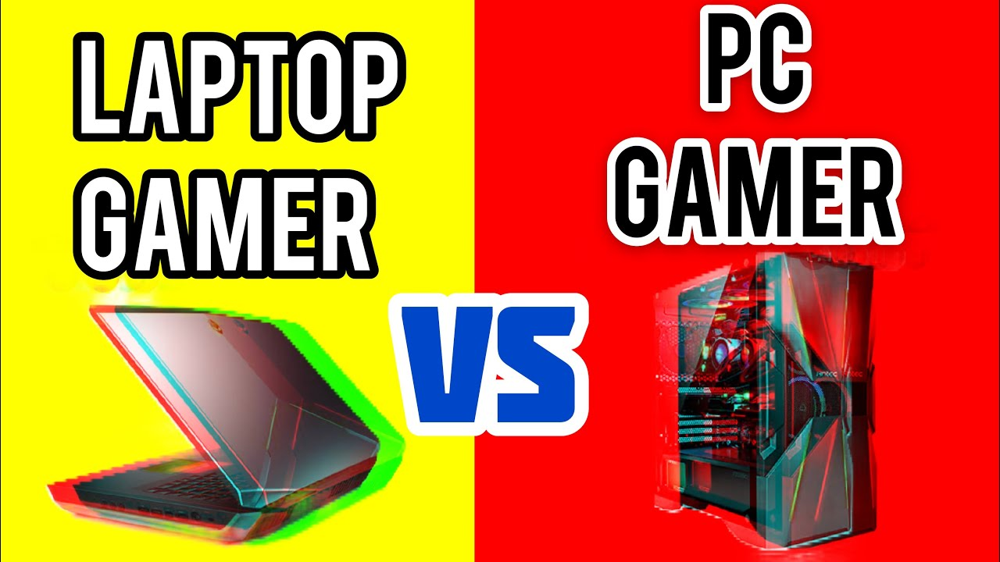

Así pues, en resumen, las mayores diferencias que tiene un ordenador gaming con uno normal son el procesador, la memoria RAM y la tarjeta gráfica. Estos son los tres elementos que marcarán la diferencia entre poder navegar por Internet y escribir textos en word; jugar a videojuegos con lag y con gráficos de baja calidad; o jugar con gráficos ultra sin problemas. Respecto del disco duro SSD, éste cada vez es más popular, y llegará un momento en el que todos los ordenadores tengan uno. Y como hemos dicho, respecto del monitor, con que no te limite el resto de los componentes de tu ordenador gaming, es más que suficiente.
